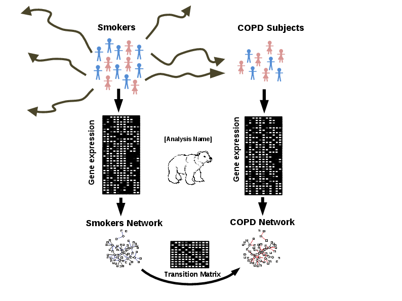
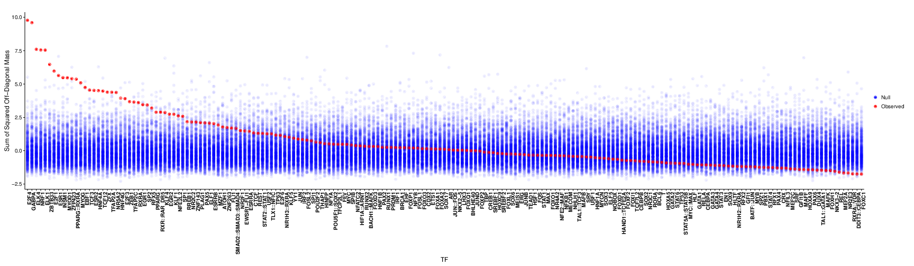
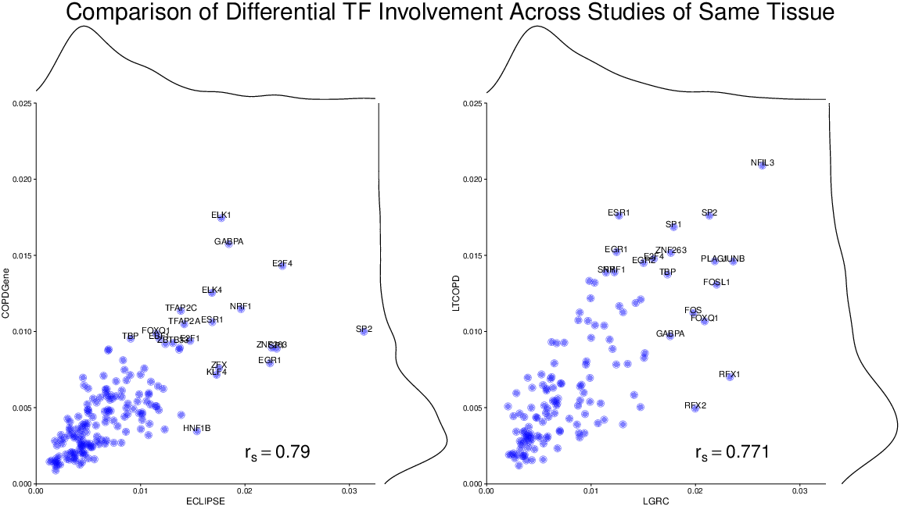
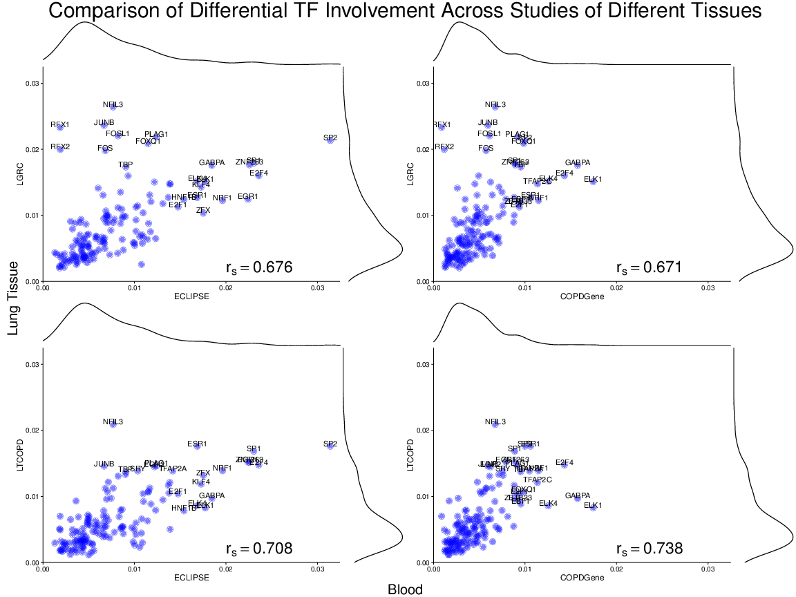
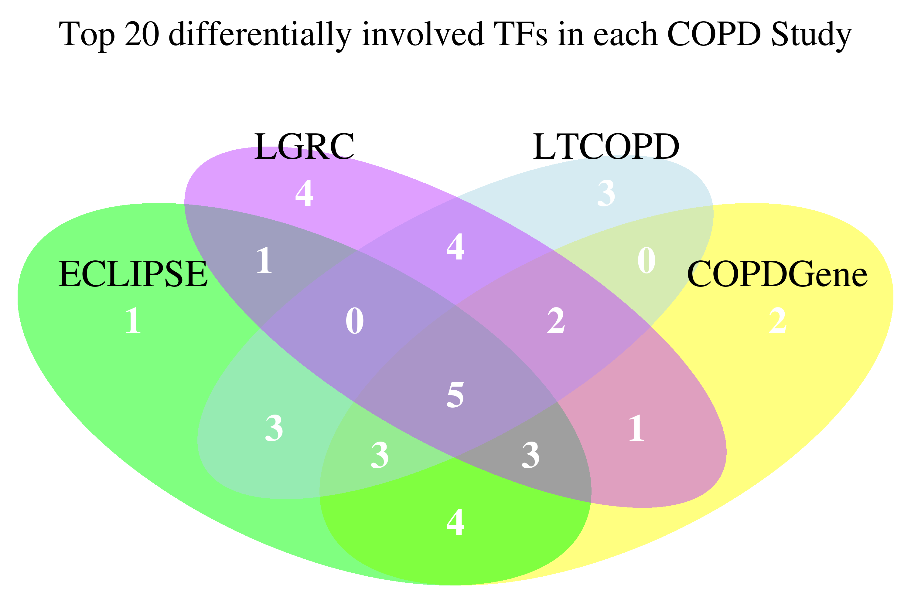

Estimating Drivers Cell State Transitions using Gene Regulatory Network Models\author[1]Daniel Schlauch \author[2,3]Kimberly Glass \author[1,3]John Quackenbush \affil[1]Department of Biostatistics and Computational Biology, Dana-Farber Cancer Institute and Department of Biostatistics, Harvard TH Chan School of Public Health, Boston, MA 02115 \affil[2]Channing Division of Network Medicine, Brigham and Women’s Hospital, Boston, MA 02115 \affil[3]Department of Medicine, Harvard Medical School, Boston, MA 02115
In the language of systems biology, the state of a cell can be represented by a gene regulatory network that characterizes the gene transcriptional processes that are active in that cell type. And transitions that occur in a wide range of biological processes, ranging from development to disease, can be thought of as transformation of the gene regulatory network from its initial state to its final state. Here we propose a regression-based generalization of the PANDA method for gene regulatory network inference for individual states, and a regression approach to modeling cell state transitions, identifying transcription factors that alter the network structure as cell states change. Our results demonstrate the ability to find strong signals which persists across studies and tissues of the same disease and which are not detectable with conventional gene expression analysis.
Introduction
One of the fundamental problems is biology is modeling the transition between biological states such as that which occurs during development or as a healthy tissue transforms into a disease state. While it is appealing to conceive of this process as deterministic, reflecting a change from one well-defined phenotype to another, in truth the situation is much more complex. Neither the initial nor the final phenotype is discrete, but each falls into a continuum of states, which, on average, captures features of that phenotype [many citations, too general?]. Indeed, within each tissue there are many, many cells, each of which is its own particular instance of that tissue—with unique patterns of gene expression and individual regulatory processes\citemohanty2014model,hu2013heterogeneity. The same is true when considering individuals as each healthy and disease state is unique to each member of a study population. One way to conceptualize the state transition problem is to imagine that each phenotype has a characteristic gene regulatory network and that there are a set of processes that are either activated or inactivated to transform the network in the initial state into that characterizing the final state. Identifying those changes could, in principle, help us to understand not only the processes that drive the state change, but also how one might intervene to either promote or inhibit such a transition.
As our ability to generate large-scale integrative multi-omic datasets, such as RNA-Seq \citelicatalosi2010rna and whole genome sequencing, has grown, there has been an increased interest in using those data to infer gene regulatory networks to model fundamental biological processes. While there have been many network inference (NI) methods published utilizing gene expression or a combination of gene expression\citemargolin2006aracne, marbach2012wisdom, wille2004sparse, faith2007large, zhang2005general and complementary ’Omics data \citeernst2008semi,glass2013passing, hecker2009gene, each of which uses a different approach to estimating the “strength” of interactions between genes (or between transcription factors and their targets), they all suffer from the same fundamental limitation. Methods typically rely on estimating weights that represent a measure of evidence of an interaction between two genes and then setting a threshold to identify “real” (high confidence) edges. While setting edge confidence thresholds allows us to graphically represent networks and allows us to compare networks based on the presence or absence of edges, it ultimately requires that we discard information regarding those “weak” edges that fail to reach an arbitrary cutoff. Now, one could argue that discarding low significance edges is sensible as one common goal in network inference is to deduce a single, high confidence network model that represents a particular phenotype under study or, in some cases, a transition between phenotypes. An alternative view is that these edges contain estimates for gene coexpression that may be muted due to the heterogeneity of the biological sample and that networks are best described by edgeweights on a continuous scale. Furthermore, we argue that the inclusion of all network edgeweights in downstream analyses allows for the collection of systematic, though subtle, differences in coexpression which may otherwise have been washed out by extraneous noise.
Modeling cell state transitions as a problem in gene regulatory network transition
Cell state transitions—such as those that occur during development, or as healthy tissue transforms into a disease phenotype—are fundamental properties of biological systems. Understanding what drives these transitions, and modeling the processes, is one of the great open challenges in modern biology. One way to conceptualize the state transition problem is to imagine that each phenotype has its own characteristic gene regulatory network, and that there are a set of processes that are either activated or inactivated to transform the network in the initial state into that which characterizes the final state. Identifying those changes could, in principle, help us to understand not only the processes that drive the state change, but also how one might intervene to either promote or inhibit such a transition. The starting point for modeling cell state transitions is to model the initial and final cell states. One might imagine that the initial and final cell states consist of characteristic processes, some of which are shared (sometimes referred to as “housekeeping” functions) and others which are unique to the particular state. The way we understand these processes is that they are controlled by gene regulatory networks in which transcription factors (and other regulators) moderate the transcription of individual genes whose expression characterizes the state. One way to represent such processes is to draw a directed network graph, in which transcription factors and genes are nodes network in the network, and edges represent the regulatory interactions between transcription factors and their target genes that are active in, and characteristic of, a particular cellular state. One way of representing such a network, with interactions between m transcription factors and n target genes, is as a binary m × n “adjacency matrix,” with 1’s representing active transcription factor-target interactions, and 0’s representing the lack of a transcription factor-target gene regulatory interaction. One can then think of a cell fate transition as the process that transforms the network in its initial state to its final state form, adding and deleting edges to remake the network that characterizes one phenotype into that which characterizes the other. Using the adjacency matrix formalism, one can think of this as a problem in linear algebra in which we attempt to find an m × m “transition matrix” T, subject to a set of constraints that approximates the conversion from the initial network’s adjacency matrix A into the final network’s adjacency matrix B, or
B = AT

Figure 1 Overview of the Transition Matrix problem. Our approach seeks to find the TF × TF matrix which best characterizes the transition in from controls to cases at the gene regulatory network level. First, gene expression samples are collected for each group, followed by gene regulatory network inference performed on cases and controls in parallel. Finally, the transition matrix is calculated, estimating the changes in TF targetting which best characterize the state change from the control group to the cases group.
While it is appealing to conceive of this process as deterministic, reflecting a change from one well-defined phenotype to another, in truth the situation is much more complex. Neither the initial nor the final phenotype is discrete, but each falls into a continuum of states, which, on average, captures the features of that phenotype. Indeed, within each tissue there are many, many cells, each of which is its own particular instance of that tissue—with unique patterns of gene expression and individual regulatory processes. In the language of adjacency matrices, what this means is that rather than representing each state by a matrix with binary entries, what one should do is use a representation in which entries are continuous, representing the strength of the transcription factor-target gene interaction averaged over the collection of samples (or cells) representing each state. And consequently, the problem of estimating the transition matrix is generalized to solving B = AT + E, where E is an m × n error matrix representing unexplained by our estimated transition and minimized by our procedure. In this formalism, modeling the cell state transition is equivalent to estimating the appropriate transition matrix T that maps how the transcription factor-target gene interactions are “rewired” between states. And one could hypothesize that the drivers of the cell state transition are those transcription factors that have the greatest change in the targets that they regulate.
To generate our gene regulatory networks we are commonly faced with state-specific gene expression data along with general regulatory prior knowledge regarding suspected regulatory relationships. [BERE-TM (NAME TBD)] performs this step by applying a novel, computationally efficient method which uses each TF’s DNA sequence binding motifs as classifiers for all genes and identifies genes which are coexpressed with the set of suspected targets as well as removes suspected targets which do not conform to the TF targets’ general pattern of expression (see supplementary materials and methods). This step yields two m × n gene regulatory matrices for cases and controls each representing estimates of the targetting patterns of the m TFs onto the n genes.
Next, the problem is formulated as a regression problem whereby we solve for the m × m transition matrix which best describes the transformation from controls to cases (see supplementary materials and methods). The ith column in the matrix can be loosely interpreted as being the optimal linear combination of columns in the controls adjacency matrix which predict the ith column in the cases adjacency matrix. Naturally, we expect the transition matrix between two identical states to approximate the identity matrix. Intuitively, it is the deviation from the identity matrix which is of biological interest with off diagonal mass at point (i, j) indicating a regulatory alteration between cases and controls involving the ith and jth TF. Focusing specifically on individual TF behavioral modifications, one might simply be interested in the overall changes for each column. This can be obtained via the sum of off-diagonal “mass” representing the sum of systematic modifications estimated in transitioning from controls to cases. Furthermore, the statistical significance of these results is estimated by permuting the case-control labels n times and rerunning the the analysis to determine the proportion of null results which are more extreme than the observed result (see supplementary materials and methods).
In evaluating the state transitions, we recognize the limitations of current network inference methods to predict individual edgeweights with a high degree of confidence. It’s therefore of interest to combine measurements across sets of edgeweights in order to extract meaningful signal from a network perturbation. Effectively, we approached the problem as a dimension reduction problem with the goal of identifying high-influence, systematic regulatory network alterations rather than isolated independent events. There are many existing methods for reducing a high-dimensional matrices which may be applied to a gene regulatory adjacency matrix. Commonly, Principal Components Analysis (PCA) identifies eigenvectors which can reconstruct the greatest degree of variance from the original data. One drawback of this approach is the lack of interpret-ability of these vectors. Our transition matrix approach can be considered as a data reduction method which (1) reduces the dimensionality of the differences between two networks (2) preserves the intuitive interpretation of its vectors and (3) utilizes our expectation that meaningful network transitions will occur via biologically systematic alterations and not via random, independent edge alterations.
[BERE-TM (NAME TBD)] finds significantly differentially involved TFs in COPD with strong concordance in independent datasets
We applied our method to four case-control datasets for Chronic Obstructive Pulmonary Disease (COPD)- Evaluation of COPD Longitudinally to Identify Predictive Surrogate Endpoints (ECLIPSE)\citevestbo2008evaluation (Figure \reffig:ECLIPSE_results) , the COPDGene study \citepillai2009genome (Supplemental Data), Lung Genomics Research Consortium (LGRC) \citelgrc(Supplemental Data) and Lung Tissue Chronic Obstructive Pulmonary Disease (LTCOPD) \citeltcopd (Supplemental Data). Each of these studies consisted of gene expression assays obtained from patients with COPD and a set of smoker controls. The tissue used in the ECLIPSE and COPDGene study was peripheral blood mononuclear cell (PBMC), while lung tissue was sampled for LGRC and LTCOPD. It is therefore reassuring that agreement is more strongly achieved between studies of the same tissue origin than acros tissues. Each of the four studies was most closely correlated with studies of the same tissue. However it is quite notable that the we do see much of the same dTFI signal across studies involving different tissue types. Gene regulatory networks derived from gene expression data are notoriously difficult to replicate across studies and it is of great interest that we have identified suspected mechanisms which are correlated not only across studies but across tissues as well.
We separately applied our BERE network inference approach on cases and controls and computed the transition matrix. Top significance hits for dTFI showed strong concordance between each of the datasets. Out of 166 TF used in this study, seven were among top 10 most differentially involved in both the ECLIPSE and COPDGene studies (Figure \reffig:compare). Furthermore, three of these seven TFs (GABPA, ELK4, ELK1) also appeared as significant in the LGRC results with FDR<.01.
A
B
Figure 2 (A) Differential transcription factor involvement in ECLIPSE study. Observed TFs undergoing state transition (red) scaled for each TF by the distribution under the randomization of case-control labels (blue). (B) Driver network transitions. Network transitions are depicted here with arrows indicating the flow of targetting patterns from one transcription factor to another. Edges are sized according to the magnitude of the transition and nodes (TFs) are sized by the overall dTFI for each TF. The gain of targetting features is indicated by the color blue while the loss of features is indicated by red.
Overall, there was a strong correlation between results in the two PBMC studies (rs = 0.87) and the two lung tissue studies (rs = 0.71) , and a weaker correlation between cross-tissue results (s = 0.63).
Of further interest is the particular TFs which are differentially observed across studies. For example, ERS1, the gene encoding Estrogen receptor alpha (ES-α) is likely to behave differently in males compared with females. We found that this TF is significantly differentially involved in the COPDGene study - identified as the 4th most differentially involved TF, but not the ECLIPSE study. Accordingly, the COPDGene study had a greater gender disparity (Odds Ratio = 1.126) than the ECLIPSE study (Odds Ratio = 1.067).
A
B
C
Figure 3 Comparison of dTFI for 166 TFs across four independent studies in two tissues. ECLIPSE and COPGene data were obtained via PBMC and LGRC and LTCOPD were obtained via lung tissue. Results for two studies with gene expression data obtained from the same source (A), PBMC (left) and lung tissue (right) show strong concordance with a high degree of agreement, particularly for top hits. Spearman correlation for each of these tissue types was rs = .87 and rs = .71, respectively. Correlations for across tissue study comparisons (B) demonstrated a weaker, but still measureable agreement. Each of the four studies was most consistent with the study of the same tissue type as its own. (C) Differentially involved transcription factors were found in agreement across datasets. Five TFs were discovered in the top 20 in each of the four studies. An additional 21 TFs were found in the top 20 TFs of at least two studies.
Notably in the LGRC dataset, we discovered a differential targetting pattern involving the TFs RFX1 and RFX2. Both of these transcription factors were highly statistically significant (FDR<.0001) and ranked as the top two results in the LGRC study. However, their signal was muted in the ECLIPSE and COPDGene studies, neither of which identified these transcription factors as drivers of the Smoker Control to COPD transition. There are many possible explanations for this result, but it is reasonable to speculate that the dramatically different result is due to the fact that the tissue of origin for the LGRC differs from the ECLIPSE and COPDGene tissue.

Figure 4 Comparison of significant results for TF differential involvement vs differential expression in ECLIPSE. TFs which are differentially involved are not necessarily differentially expressed, and vice versa. Many TFs can be observed which have significantly different targetting patterns, but which are not statistically significantly differentially expressed. This suggests that our method finds transcription factors which are differentially affected at a post-transcription stage.
The top hits which are most consistent across studies have been implicated in independent studies for the development of COPD. Two of the top 3 hits, NRF1 and GABPA have been implicated in a mitochondrial mechanism for disease progression \citecloonan2016mitochondrial. Interestingly, the majority of the TFs identified as differentially involved do not exhibit significant differential gene expression. This suggests that for these proteins, their role in the disease may not occur until the post-transcription stage. It also suggests that conventional gene expression analysis is insufficient for identifying many of the TF drivers of disease.